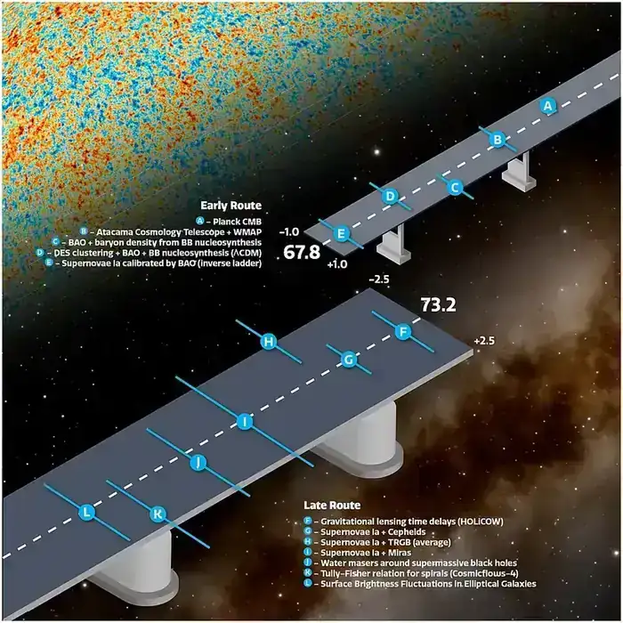
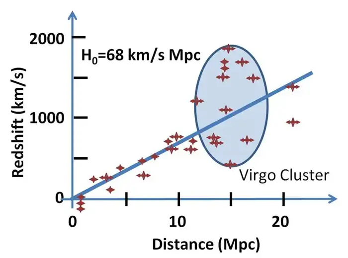
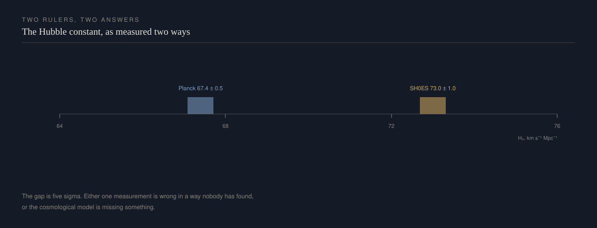

Two ways to weigh the same universe
The early-universe route reads the cosmic microwave background — the afterglow of the Big Bang — and fits a cosmological model to its ripples. Planck's 2018 result gives about 67.4 km/s per megaparsec. Because the CMB is a snapshot at 380,000 years, this route extrapolates across all of cosmic history using the standard model.
Maps, diagrams and images





The local route builds a distance ladder: parallax in the Milky Way, then Cepheid variables in nearby galaxies, then Type Ia supernovae further out. The SH0ES team's answer is about 73 km/s per megaparsec. It measures the expansion here and now, with far fewer model assumptions.
The disagreement is not between two opinions; it is between two measurements. If both are right, the standard cosmological model is incomplete — which is why the phrase 'new physics' keeps appearing.
Why it has not gone away
The gap has survived a decade of attacks on systematics, and has grown as the error bars have shrunk. The obvious suspects have been checked: Cepheid crowding, dust, the calibration of the distance ladder, the handling of the CMB's foregrounds.
The James Webb Space Telescope was the decisive test many expected. If the Cepheid measurements were contaminated by crowding in Hubble's images, JWST's sharper infrared view would show it. Instead the JWST calibrations broadly reproduced the local ladder, leaving the tension roughly where it was.
That result is why the field now treats the tension as a real feature of the data rather than a mistake waiting to be found.
Early dark energy. A component that briefly dominated before recombination would shrink the sound horizon and raise the inferred present-day rate. It fits, and it is contrived: the same mechanism tends to spoil other successes of the model.
A revised distance ladder. A systematic in the Cepheid calibration that has escaped every audit so far. Possible, but the burden of proof is now on this explanation.
Something else entirely. Interacting dark matter, a varying equation of state, extra relativistic species. All are constrained, none is excluded, and each fixes one number while disturbing others.
The honest status
This is the cleanest example in modern physics of a measurement problem that may be a discovery. Five sigma is the conventional threshold for claiming an effect; the tension has crossed it, which does not mean new physics — it means the probability that both measurements are correct within the standard model is small enough to demand an answer.
The resolution will not be rhetorical. Either a new component is found that fits the CMB and the ladder together, or a systematic is found that moves one of the numbers. Until then, the two values stay on the page, side by side, which is exactly how a live debate should look.
What would change the label
A third, independent route landing between the two would not settle it — it would sharpen the question. The tip of the red giant branch distance ladder, gravitational lensing time delays and megamaser distances have all been used, and several sit closer to Planck than to SH0ES, which is why the disagreement is now argued as a problem in one specific rung rather than in cosmology as a whole.
The practical test is the Cepheid calibration: JWST can resolve crowding in the same host galaxies SH0ES used, and the first re-analyses have moved the number by amounts comparable to the discrepancy. If a systematics fix of that size appears, the label moves to documented and the standard model survives. If it does not, the label moves the other way.

Sources for this page
- Planck Collaboration (2020), cosmological parameterswww.aanda.org
- Riess et al. (2022), a comprehensive local measurementiopscience.iop.org
- NASA/STScI, JWST and the expansion-rate measurementswww.stsci.edu
- Wikipedia, “Hubble's law” — the tension and proposed resolutionsen.wikipedia.org
Open resources on this topic
- BookThe Cosmic Microwave Background Radiation (CMBR) as Primordial Absolute and the Structural Resolution of the H — Chabane Dahli · 2026 (Internet Archive, free to read)
- BookThe Hubble Tension As An Epistemic Crisis Of The Standard Cosmological Model Multi Probe Measurement Landscape — SAPCRAA · 2024 (Internet Archive, free to read)
- PapersOpen-access articles: DOAJ · PubMed Central · Internet Archive Scholar
- BooksPublic-domain and borrowable copies: Open Library · Project Gutenberg · Google Books
More images
Cite this page
Momin, S. (2026). The Hubble Tension. The Larger World Archive. https://drsamonline.github.io/LARGE_GLOBE/hubble-tension.htmlMomin, Sohil. “The Hubble Tension.” The Larger World Archive, 2026, https://drsamonline.github.io/LARGE_GLOBE/hubble-tension.html.Momin, Sohil. “The Hubble Tension.” The Larger World Archive, 2026. https://drsamonline.github.io/LARGE_GLOBE/hubble-tension.html.@misc{the2026hubble,
author = {Momin, Sohil},
title = {The Hubble Tension},
year = {2026},
howpublished = {The Larger World Archive},
url = {https://drsamonline.github.io/LARGE_GLOBE/hubble-tension.html},
note = {Last reviewed 20 November 2026}
}Last reviewed 20 November 2026 · Corrections policy · this page is not peer reviewed